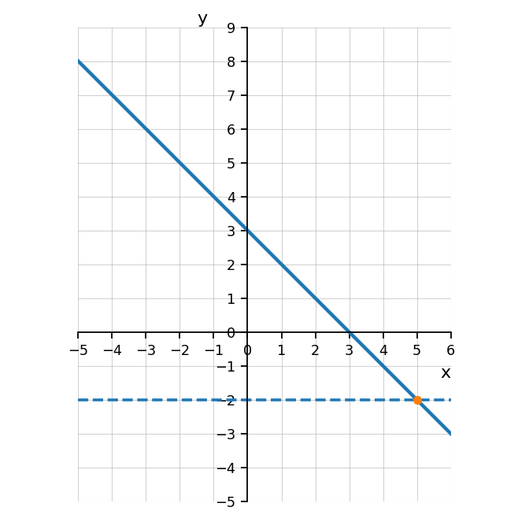

Let $p(x)=-3x^2+1$. Evaluate:
Solve $f(x)=9$ when $f(x)=3x-6$.
Set the function equal to 9.
$$3x-6=9$$
$$3x=15$$
$$x=5$$
The graph of $h$ and the horizontal line $y=-2$ are shown.

A student evaluates $f(-2)$ for $f(x)=3x^2-4x+1$ and gets $-3$.
Identify the values of $a$, $h$, and $k$ for each function written in the form $y=a(x-h)^2+k$.
Match each function to its transformation from $y=x^2$.
Transformations:
State whether each graph is wider, narrower, or the same width as $y=x^2$.
Fill in the blanks.
For $y=2(x-7)^2-3$, the graph is shifted ______ units right, ______ units down, stretched by a factor of ______, and opens ______.
The graph is shifted 7 units right, 3 units down, stretched by a factor of 2, and opens upward.
Write a quadratic equation in vertex form with:
Use $y=a(x-h)^2+k$.
Here $a=\frac12$, $h=-1$, and $k=4$.
$$y=\frac12(x+1)^2+4$$
For the function $f(x)=3(x+2)^2-12$, find:
A student says, “The graph of $y=-\frac12(x-3)^2+4$ is narrower than $y=x^2$ because there is a fraction.” Is the student correct? Explain.
No. Since $\left|-\frac12\right|=\frac12$, the graph is wider than $y=x^2$.
The negative sign makes the parabola open downward.
A student claims that the following two functions have the same graph because they both have vertex $(2,5)$:
$$f(x)=2(x-2)^2+5$$
$$g(x)=\frac12(x-2)^2+5$$
Simplify each expression.
Rewrite each expression using positive exponents.
Simplify each expression. Write answers with positive exponents.
A student says:
“When multiplying powers with the same base, you multiply the exponents.”
Use repeated multiplication to explain why this is incorrect.
Use the expression:
$$x^3\cdot x^4$$
Repeated multiplication gives
$$x^3\cdot x^4=(x\cdot x\cdot x)(x\cdot x\cdot x\cdot x)=x^7$$
When multiplying powers with the same base, add the exponents: $x^3\cdot x^4=x^{3+4}=x^7$.